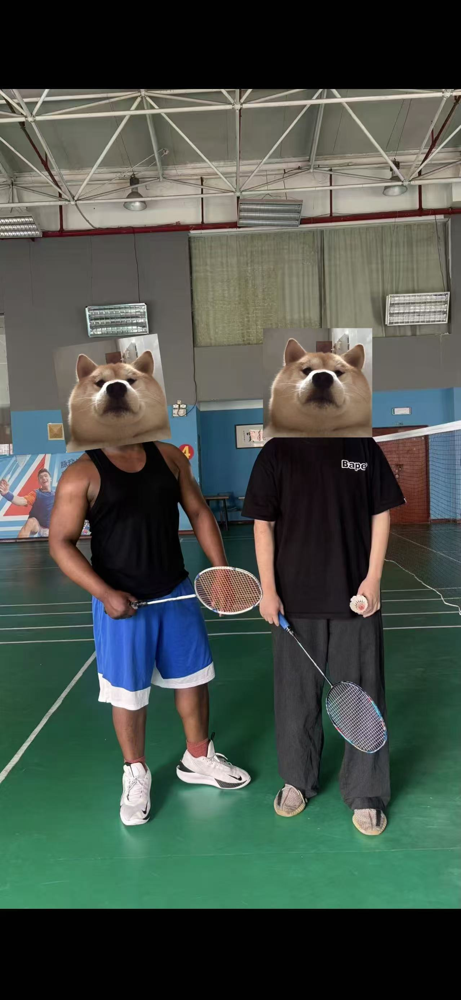
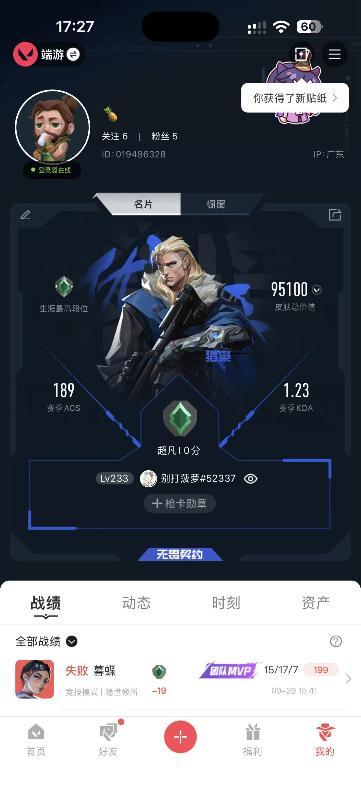

The Hang Seng University of Hong Kong (HSUHK)
BFinTech (Financial Analytics), Year 3
FINTECH · HONG KONG
Bachelor of Business Administration (Honours) in Financial Analysis and FinTech Sep 2026 – May 2028 · Minor in Data Analytics
01 / A LITTLE ABOUT ME
I’m Leo, a 20-year-old FinTech student originally from Shenzhen and now studying in Hong Kong. I’m curious about how technology reshapes society—especially in AI and FinTech—and I like making ideas concrete through small, practical builds. I value patience, clear communication, and staying calm under pressure. Recently, I’ve focused on testing, quality, and careful iteration, learning by doing and paying attention to details.
02 / THE LEARNING PATH
BFinTech (Financial Analytics), Year 3
Associate Degree in Financial Technology
Selected courses: Financial Technology, Blockchain, Database Systems, Machine Learning, Statistics, Microeconomics
03 / TOOLS & APPROACH
Familiar with JavaScript; built a Java desktop budgeting application.
Coursework and hands-on testing, annotation, and quality sampling experience.
Used Excel for quality sampling and generative AI for product-demo content.
Collaborative, careful, and steady when working through feedback and iteration.
04 / SELECTED EXPERIENCE
Ideas, prototypes, and learning in practice.
Designed and presented a full product concept using generative AI for content and imagery, covering front-end and back-end at a conceptual level. Built a complete deck and demo to explain the product to classmates and faculty.
A basic Java application to track monthly income and expenses. It supports recording entries, categorizing them, and visualizing simple summaries to help students see where money goes.
The Java project source is not included in this portfolio workspace.
Description generalized to respect confidentiality.
05 / AWAY FROM THE SCREEN

I enjoy routine practice and friendly matches to stay active.

Team-based strategy and communication keep the game engaging.
Listening helps me stay calm and focused during study and testing.
06 / LET’S CONNECT
Open to exploring internship opportunities in FinTech/AI.